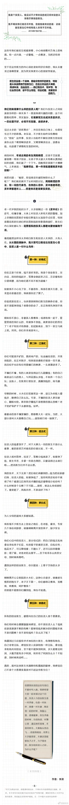

我看这篇文章，觉得标题应该是“投资人眼里的奇葩创业医生”。IT行业里的创业者，也能对号入座。@丽格李滨:发布了头条文章：《创业的医美大夫，喜欢什么样的投资人？（上）》 @联合丽格 @联合丽格第一医疗美容医院 @整形医生巫文云 @王志军教授 @郭树忠教授 @杨大平教授 @丰联丽格王冀耕 @爱悦丽格马力 @微整之王忠杰 @洪性范 @皮肤美容王洪军教授 @laserking--赵小忠 @周展超教授 创业的医美大夫，喜欢什么样的投资人？（上） 创业的医美大夫，喜欢什么样的投资人？（上） 